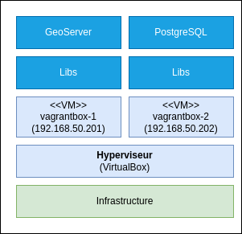
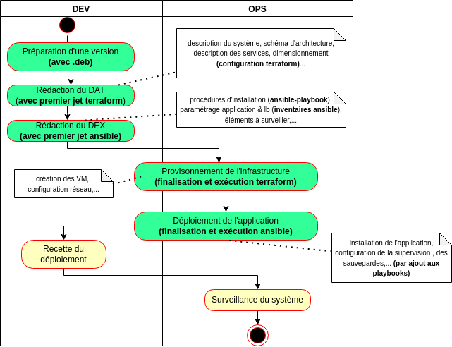

# DevOps avec des VM * Contexte * Architecture initiale * La création d'un livrable * La création des VM * Le déploiement de l'application * Que manque-t'il? * L'incontournable zone d'hébergement --- ## Contexte Nous allons voir en pratique comment se passe le déploiement d'une application **as code** sur des VM Linux en déployant : * [PostgreSQL](https://www.postgresql.org/) avec l'extension [PostGIS](https://postgis.net/) pour stocker des données géographiques. * [GeoServer](https://geoserver.org/) pour diffuser ces données en WMS et WFS. Nous appellerons le système résultant **GeoStack** (afin d'avoir un nompour le dépôt dédié au déploiement : `geostack-deploy`). --- ## Architecture initiale Nous commencerons par l'architecture triviale suivante :  Nous en étudierons les limites par la suite. --- ## La création d'un livrable (1/4) ### Ne pas construire l'application en PRODUCTION <span style="color: red; font-weight">Construire une application sur la PRODUCTION amène de nombreux problèmes :</span> * Le risque de **ne pas pouvoir redéployer l'application en cas de problème** (ex : disparition d'une dépendance, indisponibilité d'un service,...) * Une **augmentation de la durée du déploiement** (construction sur chaque instance) * Le besoin d'**accéder à des ressources non exposées** (donc des demandes d'exception sur les pare-feux) * Le besoin d'**accéder à des ressources privées** (donc des authentifications supplémentaires avec git, npm,...) * ... NB : L'utilisation de fichier `package-lock.json`, `composer.lock`,... ne vous protégera que contre une montée en version inattendue des dépendances. --- ## La création d'un livrable (2/4) ### Produire et stocker un livrable à déployer Pour le déploiement d'une application en PRODUCTION, il est important de : * **Tagger une version** au niveau du gestionnaire de code source (ex : `v0.1.0`). * **Produire un livrable** pour cette version du code. * [Stocker ce livrable](annexe/stockage-artefact.html). * Déployer en PRODUCTION un livrable stocké en lieu sûr. (c.f. [Les 12 facteurs - V. Assemblez, publiez, exécutez](https://12factor.net/fr/build-release-run)) > Ce principe n'interdit pas de déployer en continu une version correspondant à la branche principale dans un environnement de DEV. --- ## La création d'un livrable (3/4) ### Packager sa propre application Dans le cas où il convient de créer un livrable pour sa propre application, nous remarquerons que : * Il existe une **grande variété de formats de livrables possibles** en fonction des technologies et de l'OS cible (c.f. [format supportés par Nexus qui permet de créer différents types de dépôt](https://help.sonatype.com/repomanager3/nexus-repository-administration/formats) ) * Packager des applications telles PostgreSQL est un métier (construire et maintenir des .deb ou .rpm dans les règles de l'art n'est pas trivial). * Dans le cas des **langages interprétés** (NodeJS, PHP...) : * Nous pourrons nous contenter en guise de livrable d'une simple archive (**.zip avec le code de la version + les dépendances**) * Nous pourrons aussi facilement produire des .deb avec des outils tels [FPM](https://fpm.readthedocs.io) (1) Nous n'entrerons pas trop dans le détail (*spoiler* : nous verrons comment l'utilisation de conteneurs solutionne ce problème) > (1) Voir [github.com - IGNF/validator - build-deb.sh](https://github.com/IGNF/validator/blob/master/build-deb.sh) pour un exemple trivial (sans script pré/post-installation). --- ## La création d'un livrable (4/4) ### Choisir des services déjà empaquetés Dans le cas présent, nous avons cette chance : * [PostgreSQL](https://www.postgresql.org/download/) met à disposition des binaires pour différents systèmes. Nous avons même un dépôt [APT](https://wiki.postgresql.org/wiki/Apt) qui permettra d'utiliser `apt-get install` et `apt-get upgrade` * [GeoServer](https://geoserver.org/release/stable/) met lui aussi à disposition des livrables prêts à l'emploi. --- ## La création des VM (1/5) ### La variété des API Il existe une grande variétés d'offres d'hébergement offrant une API permettant de contrôler : * Les machines virtuelles (*compute*) * Les réseaux privés (*network*) * Le stockage (*storage*) * L'exposition de service (*Load Balancer*) * Un nom de domaine / DNS * ... Nous trouverons des **concepts spécifiques à chaque solution dans ces API** (c.f. [API OVHCloud](https://api.us.ovhcloud.com/console/), [API Scaleway](https://developers.scaleway.com/en/), [DigitalOcean API (2.0)](https://docs.digitalocean.com/reference/api/api-reference/)...) --- ## La création des VM (2/5) ### Terraform Pour **gérer une infrastructure "as code" en production** sans programmer les appels à ces API, nous pourrons nous appuyer sur **[Terraform](https://www.terraform.io/intro#how-does-terraform-work)** qui apporte : * Un **langage déclaratif** pour la création des ressources (machine virtuelle, réseau,...) * Le support d'un [grand nombre de fournisseurs](https://registry.terraform.io/browse/providers) dont : * Les clouds publics : [AWS](https://registry.terraform.io/providers/hashicorp/aws/latest/docs), [Azure](https://registry.terraform.io/providers/hashicorp/azurerm/latest/docs), [Google Cloud Platform](https://registry.terraform.io/providers/hashicorp/google/latest),... * Les clouds privés : [vsphere](https://registry.terraform.io/providers/hashicorp/vsphere/latest/docs), [openstack](https://registry.terraform.io/providers/terraform-provider-openstack/openstack/latest/docs),... Nous nous contenterons dans un premier temps d'inspecter un exemple de création de VM Google Cloud avec Terraform : [google_compute_instance](https://registry.terraform.io/providers/hashicorp/google/latest/docs/resources/compute_instance). --- ## La création des VM (3/5) ### Vagrant (1/3) Pour ce cours, nous allons plutôt utiliser [**Vagrant**](https://www.vagrantup.com/) qui est lui aussi développé par [HashiCorp](https://www.hashicorp.com/) et qui est l'équivalent de [Terraform](https://www.terraform.io/) pour les environnements de développement. --- ## La création des VM (4/5) ### Vagrant (2/3) Nous utilisons le dépôt [mborne/vagrantbox](https://github.com/mborne/vagrantbox#vagrantbox) pour **créer des VM décrites dans un fichier** [Vagrantfile](https://github.com/mborne/vagrantbox/blob/master/Vagrantfile) avec une commande (`vagrant up`) : <div class="center"> <img src="img/vagrantbox-up.drawio.png" style="height: 300px" /> </div> --- ## La création des VM (5/5) ### Vagrant (3/3) Nous soulignerons que : * La principale difficulté traitée dans le dépôt [mborne/vagrantbox](https://github.com/mborne/vagrantbox#vagrantbox) est l'utilisation optionnelle d'un proxy sortant avec le plugin [vagrant-proxyconf](https://rubygems.org/gems/vagrant-proxyconf/versions/1.5.2). * Une [annexe Vagrant](annexe/vagrant/index.html) explique comment créer ses propres `Vagrantfile`. * Vagrant est aussi pratique pour créer une VM de DEV Linux avec un environnement graphique (`apt-get install ubuntu-desktop`) * Nous créons ici des VM [VirtualBox](https://www.virtualbox.org/) mais [Vagrant supporte d'autres hyperviseurs (ex : KVM)](https://www.vagrantup.com/docs/providers) * Il existe [un dépôt public d'image de VM pour vagrant](https://app.vagrantup.com/boxes/search). --- ## Le déploiement de l'application ### Principe Nous avons avec Vagrant et Terraform des outils capables de **créer nos VM as code**. Il nous reste à trouver une solution pour procéder de même pour déployer nos applications comme suit : <div class="center">  </div> --- ## Le déploiement de l'application ### Les outils de gestion de configuration Les outils de **gestion de configuration** sont les plus adaptés pour **installer et configurer nos applications**. Les plus connus sont : * [Ansible](https://docs.ansible.com/ansible/latest/index.html) * [Chef](https://docs.chef.io/platform_overview/) * [Puppet](https://puppet.com/docs/puppet/6/puppet_overview.html) --- ## Le déploiement de l'application ### Le choix d'Ansible Nous allons nous appuyer sur Ansible qui est une solution : * [Libre, OpenSource et référencée dans le SILL (1)](https://code.gouv.fr/sill/detail?name=Ansible) * Basée sur l'utilisation du format YAML * Implémentée en Python * **Permettant l'utilisation d'un orchestrateur de déploiement** (ex : [AWX](https://github.com/ansible/awx#readme), [Jenkins](https://plugins.jenkins.io/ansible/), [GitLab-CI](https://about.gitlab.com/blog/2019/07/01/using-ansible-and-gitlab-as-infrastructure-for-code/),...) sans l'imposer. > (1) [https://code.gouv.fr/sill - Socle interministériel de logiciels libres](https://code.gouv.fr/sill/) qui est une excellente source de veille. --- ## Le déploiement de l'application ### Les principaux exécutables d'Ansible Nous [trouverons plusieurs exécutable avec Ansible](https://docs.ansible.com/ansible/latest/command_guide/index.html) : * [ansible](https://docs.ansible.com/ansible/latest/cli/ansible.html) qui permettra par exemple de lancer une commande sur les machines d'un inventaire. * [ansible-playbook](https://docs.ansible.com/ansible/latest/cli/ansible-playbook.html) qui sera utilisée pour traiter un ensemble de tâches décrites au format YAML. * [ansible-galaxy](https://docs.ansible.com/ansible/latest/cli/ansible-galaxy.html) qui permettra de télécharger des rôles partagés pour construire vos playbooks (voir [galaxy.ansible.com](https://galaxy.ansible.com/)). * [ansible-vault](https://docs.ansible.com/ansible/latest/cli/ansible-vault.html) qui permettra de chiffrer des secrets. Nous noterons que : * L'[installation en local pourra être réalisée dans un environnement virtuel python](https://gist.github.com/mborne/eeb3a0177fe27f5ed393a00eded0a86f#file-ansible-venv-md) pour éviter les conflits de version de bibliothèques Python (et le recours aux droits root via `sudo`) * [Il n'est pas possible d'utiliser les exécutables Ansible directement sur windows](https://docs.ansible.com/ansible/latest/os_guide/windows_faq.html#can-ansible-run-on-windows) * Il est **possible de gérer des machines windows avec Ansible** à l'aide de [modules dédiés](https://docs.ansible.com/ansible/latest/collections/ansible/windows/index.html#modules). --- ## Le déploiement de l'application ### Le principe de fonctionnement d'Ansible S'il faudra réfléchir dans certains cas, nous remarquerons que bien souvent, la traduction des commandes en YAML pour appeler le module Ansible correspondant sera triviale : ```bash sudo apt-get update sudo apt-get install nginx ``` ...devient : ```yaml - name: Install nginx apt: name: nginx state: present update_cache: yes ``` --- ## Le déploiement de l'application ### Le déploiement de GeoStack avec Ansible! Présenter proprement les [concepts d'Ansible](https://docs.ansible.com/ansible/latest/getting_started/basic_concepts.html) demanderait plusieurs séances. L'idée de ce cours n'étant pas de former à la rédaction de script Ansible, nous allons plutôt **découvrir Ansible** à l'aide des exemples suivants : * [mborne/vagrantbox - Ansible - QuickStart](https://github.com/mborne/vagrantbox#ansible) qui applique un post-traitement après création des VM (configuration `/etc/hosts`, ajout de votre clé SSH, nettoyage `~/.ssh/known_host`...) * [mborne/geostack-deploy](https://github.com/mborne/geostack-deploy/blob/master/ansible/README.md#d%C3%A9ploiement-de-geostack-avec-ansible) qui assure le déploiement de GeoStack avec Ansible. --- ## Le déploiement de l'application ### Conclusion sur Ansible Nous mémoriserons que Ansible permet de **décrire as code le déploiement d'une application avec un fichier YAML** qui sera exploitable comme suit : ```bash # déploiement en QUALIF ansible-playbook -i inventory/qualif mon-application.yml ``` Nous insisterons sur l'apport de Ansible pour : * **Gérer des paramètres** en fonction des environnements (notamment par rapport à des scripts `install-geoserver.sh`) * **Traiter des actions uniquement en cas de changement** (par exemple pour éviter des redémarrages inutiles) * **Faciliter la rédaction et la maintenance des déploiements** (YAML et [nombreux modules disponibles](https://docs.ansible.com/ansible/2.9/modules/list_of_all_modules.html) rendant les procédures lisibles même sans connaissance d'Ansible). * **Permettre la réutilisation de scripts de déploiements complet** (téléchargement de rôles avec `ansible-galaxy`, composition de playbook à partir de rôles,...) --- ## Le déploiement de l'application ### Processus résultant En terme de répartition des rôles, nous pourrions aboutir par exemple au processus suivant après adoption des outils par les DEV et les OPS : <div class="center">  </div> --- ## Que manque-t'il? ### La sécurité! Nous ne pourrions pas procéder ainsi avec des VM exposées sur internet : * Nos VM seraient rapidement la cible des nombreux bots qui scannent le web (voir [extrait de logs illustrant ces attaques sur SSH](annexe/securite/sshd-logs.txt)) * Nous finirions sur [https://www.shodan.io](https://www.shodan.io/) Il faudrait à minima : * Configurer un pare-feu local (par exemple avec [ufw](https://doc.ubuntu-fr.org/ufw)) * Configurer [fail2ban](https://doc.ubuntu-fr.org/fail2ban) pour bloquer les attaques par force brute sur SSH * Blinder la configuration des VM ( c.f. [dev-sec.io - DevSec Hardening Framework](https://dev-sec.io/baselines/linux/) ) * ... > Nous noterons l'existence d'une alternative à [fail2ban](https://doc.ubuntu-fr.org/fail2ban) : [CrowdSec](https://github.com/crowdsecurity/crowdsec#readme) où les IP suspectes sont partagées. Nous nous assurerons de respecter le [RGPD](https://www.cnil.fr/fr/rgpd-de-quoi-parle-t-on) avec ce type d'outil. --- ## Que manque-t'il? ### L'incontournable reverse proxy (1/2) Il conviendrait aussi à minima de passer sur une architecture du type suivant en ajoutant un reverse proxy ("lb") :  --- ## Que manque-t'il? ### L'incontournable reverse proxy (2/2) Avec un reverse proxy, nous pourrions par exemple : * Exposer publiquement les seuls services WMS et WFS de GeoServer (`/wms`, `/wfs`) * Exposer l'interface d'administration de GeoServer (`/geoserver`) avec un filtrage par IP. --- ## Que manque-t'il? ### La mise en oeuvre de HTTPS **Tant que nous serons en HTTP, le mot de passe de l'administrateur GeoServer circulera en clair sur le réseau**. Il conviendrait donc de mettre en oeuvre HTTPS pour y remédier. Nous soulignerons que : * HTTPS pourrait être mis en oeuvre au niveau du reverse proxy * La mise en oeuvre HTTPS requière l'achat d'un certificat ou la génération de celui-ci avec [Let's Encrypt](https://letsencrypt.org/fr/) * Pour les services exposés sur INTERNET, il existe des outils pour tester et blinder la configuration de TLS (cyphers, entêtes de sécurité, chaîne de certification...) tels : * [https://www.ssllabs.com/ssltest/](https://www.ssllabs.com/ssltest/) * [https://www.sslshopper.com](https://www.sslshopper.com/) * Pour les services non exposés (intranet, RIE,...), il faudra maîtriser `openssl` pour diagnostiquer et détecter ces problèmes. --- ## Que manque-t'il? ### L'observabilité Pour pouvoir exploiter ces deux composants, il faudrait : * Configurer la **centralisation des logs** * Configurer un **système de supervision**  --- ## Que manque-t'il? ### Les sauvegardes En l'état, **si l'une de nos machines vient à s'embraser : Les données sont perdues**. Il serait donc important d'adopter une stratégie de sauvegarde et plusieurs options sont possibles : * S'appuyer sur des mécanismes de snapshot de VM. * Exporter et externaliser régulièrement les seules données de l'application par exemple en créant une archive avec : * Une sauvegarde de la base PostgreSQL (`pg_dump`) * Les fichiers de GeoServer (`GEOSERVER_DATA_DIR`). > Voir [Back up and restore GitLab](https://docs.gitlab.com/ee/raketasks/backup_restore.html) où la commande `gitlab-backup create` permet de générer une sauvegarde de la base et des dépôts. --- ## Que manque-t'il? ### La résilience Pour les systèmes critiques, il ne sera pas acceptable de devoir attendre la fin d'une restauration de sauvegarde pour que le système redémarre. De même, pour les volumétries importantes, il ne sera pas réaliste de procéder à des sauvegardes complètes. A ce titre, nous soulignerons que nous pourrions mettre en oeuvre de **mécanismes de redondance** au niveau des composants GeoStack avec des stratégies propres à chaque application : * [PostgreSQL - High Availability, Load Balancing, and Replication](https://www.postgresql.org/docs/current/high-availability.html) * [GeoServer - Clustering GeoServer](https://docs.geoserver.geo-solutions.it/edu/en/clustering/index.html#clustering-geoserver) Nous soulignerons que l'exercice est loin d'être trivial et comprendrons mieux pourquoi **certaines applications sont conçues pour répondre nativement à cette problématique (ElasticSearch, etcd, MongoDB,...)** --- ## L'incontournable zone d'hébergement ### La nécessité de traiter globalement ces problèmes Il est illusoire d'espérer **traiter de manière homogène ces problématiques au niveau de chaque application**. Traiter ces problématiques de manière efficace demandera la **mise en place d'un cadre** pour l'accueil des applications. Les déploiements seront donc généralement réalisés dans une **zone d'hébergement** (1) prévue pour l'accueil des applications. > (1) Le nom variera en fonction des organisations et solutions d'hébergement : *Landing zone* (AWS), socle technique d'exploitation,... --- ## L'incontournable zone d'hébergement ### Les principaux composants Dans cette zone d'hébergement, nous trouverons par exemple l'architecture suivante avec une **mutualisation des composants** exploités par plusieurs applications :  > NB : Prévoir un traitement particulier pour les **services de stockage** simplifiera la mise en oeuvre d'un **plan de sauvegarde** et d'un **plan de reprise d'activité (PRA)**. --- ## L'incontournable zone d'hébergement ### Le délicat recours à une équipe dédiée... (1/3) Pour faire face à la complexité et à la diversité des sujets, nous conviendrons qu'il sera difficile d'éviter de **recourir à une équipe dédiée** pour la construction de la zone d'hébergement. Nous soulignerons qu'il sera alors possible de préciser les rôles des DEV et des OPS avec par exemple : * Des **PlatDev** et **PlatOps** en charge des composants de la zone d'hébergement * Des **AppDev** et **AppOps** en charge des applications métiers --- ## L'incontournable zone d'hébergement ### Le délicat recours à une équipe dédiée... (2/3) Toutefois, nous noterons que le **recours à une équipe dédiée** ramène au problème d'origine adressé par DevOps : **La séparation entre les équipes en charge des applications et les équipes en charge de la zone d'hébergement**. Il conviendra de **s'assurer que le cadre technique et la méthode de travail permettent l'automatisation des déploiements** dans de bonnes conditions : * La nécessité de recourir à un **ticket** pour configurer un seul élément (ex : ajouter une VM derrière le LoadBalancer) suffira à **plomber les efforts d'automatisation**. * Le moindre **comportement inattendu** sera source de **problèmes de cohabitation** entre les équipes applicatives et celle en charge de la zone d'hébergement. --- ## L'incontournable zone d'hébergement ### Le délicat recours à une équipe dédiée... (3/3) *Poser un **cadre "as code"** et **être précis sur les responsabilités et les demandes** sera incontournable : * Avec "je veux des mises à jour régulière", l'équipe en charge de la zone d'hébergement ajoutera potentiellement en bonus un `rm -rf /etc/apt/sources.list.d/*` pour reconfigurer ses seuls dépôts. * Avec "je veux une exécution régulière de `apt-get update && apt-get upgrade -y`", il y aura moins de place pour la fantaisie. --- ## L'incontournable zone d'hébergement ### Docker et Kubernetes à la rescousse Nous verrons par la suite comment : * Les [conteneurs](conteneurs.html) solutionnent ce **problème de partage de responsabilité** en embarquant les dépendances des applications dans les images (1). * [Kubernetes](kubernetes.html) traite ces problèmes **à l'échelle d'une zone d'hébergement** par exemple en **cloisonnant les applications** (concept *Namespace*) et en permettant aux équipes applicatives de **spécifier les URL externes** (concept *Ingress* pour la configuration du LoadBalancer). > (1) Je passerai sous silence la possibilité de fournir l'image d'une VM applicative complète avec un outil tel [Packer](https://www.packer.io/) voire un simple fichier [cloud-init](https://cloud-init.io/).